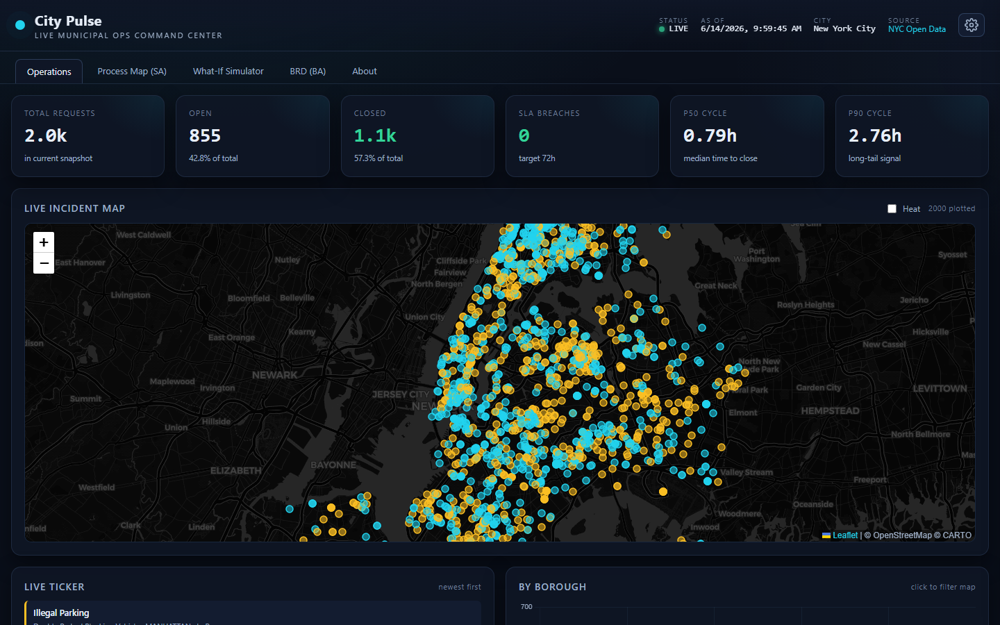

Live demo

Flagship · live municipal data
City Pulse
A zero-cost operations command center for New York City's 311 service requests. A scheduled job pulls fresh data every hour, and the page turns it into live KPIs, a Leaflet incident map, a measured 311 process map, a what-if resolution-time simulator, and an auto-populated BRD you can print to PDF.
Hourlylive refresh
$0infra cost
6analytics panels